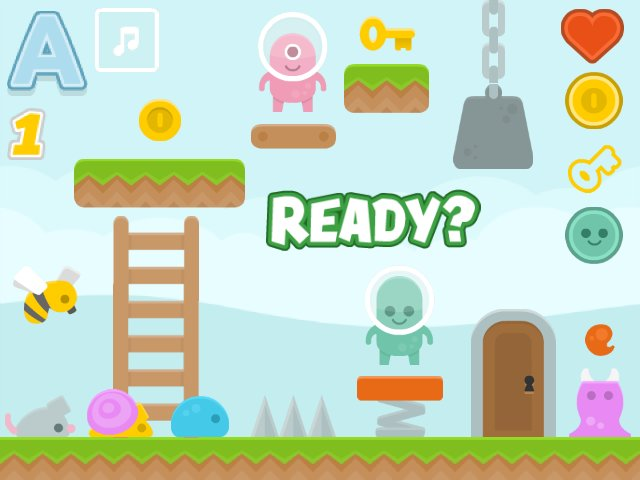

Objectif
Nuit du C0de
Six heures, une équipe de 2 ou 3, un univers de jeu imposé… et un jeu vidéo à créer de A à Z. Ce site rassemble la présentation du concours et un parcours complet d'ateliers pour y préparer vos élèves, de la toute première séance au game pack.
🌙 La Nuit du Code
Le concours officiel : principe, catégories Scratch et Python, calendrier 2026-2027, chiffres clés.
🧭 Le parcours de préparation
Les séquences #0 à #9, la passerelle et les bonus, avec un côté élève et un côté prof.
🎮 Les game packs
7 univers Scratch analysés : lutins, décors, sons, et la fiche qui va avec.
📜 Règles & évaluation
Ce qui est permis, ce qui est interdit, et la grille du jury (4 critères notés sur 5).
⬇️ Ressources
Toutes les fiches PDF et les game packs à lire et télécharger directement.
🎬 Les tutos
18 épisodes vidéo reliés aux séquences : déplacements, clones, sauts, scrolling…
🗓️ Organiser l'événement
Les 10 étapes, la feuille de route et la check-list du jour J.
Du premier carré au jeu complet
Chaque séquence ajoute une brique. Cliquez sur une étape pour ouvrir sa fiche détaillée.
1, 2, 3… c0dez !
Cette compétition est avant tout une fête et une formidable occasion de travailler de nombreuses compétences de manière ludique.
La Nuit du Code, c'est quoi ?
Un marathon de programmation éducatif et ludique : en équipes de 2 ou 3, les élèves imaginent, conçoivent et codent entièrement un jeu vidéo en 6 heures maximum (moins pour les plus jeunes), à partir d'un univers de jeu fourni.
🎯 Le défi
Scénario, gameplay, graphismes, musique : les équipes gèrent tout. La seule limite est leur imagination. Il n'est pas nécessaire de connaître Scratch ou Python à l'avance : quelques séances de préparation suffisent.
🌗 Pas forcément la nuit !
Matin, après-midi, soirée, en semaine ou le week-end : chaque établissement choisit sa date et son créneau entre mai et juin.
💸 Budget
De zéro à quelques dizaines d'euros. Quelques ordinateurs connectés, une ou plusieurs salles, des encadrants. Familles pour les boissons et le goûter ; pizzas, goodies et récompenses en option.
🏆 Après l'épreuve
Les jeux sont publiés et testés par d'autres classes. Chaque établissement peut proposer jusqu'à 2 jeux par catégorie à la sélection internationale ; un jury d'enseignants retient 8 jeux par catégorie.
Deux langages, six catégories
🐱 Scratch
| Catégorie | Durée |
|---|---|
| CM1 → 6e (cycle 3) | réduite (≈ 4 h) |
| 5e → 3e (cycle 4) | 6 h |
| Lycée | 6 h |
🐍 Python + Pyxel
| Catégorie | Durée |
|---|---|
| NSI Première | 6 h |
| NSI Terminale | 6 h |
| Post-bac | 6 h |
Le game pack, cœur du concours
Chaque année, plusieurs univers de jeu sont fournis : ils contiennent tous les lutins, sons et arrière-plans nécessaires. Ils sont envoyés aux organisateurs environ 36 heures avant la date choisie et les élèves les découvrent au lancement de l'épreuve. Ils en choisissent un, puis créent le jeu de leur choix en respectant les règles.
Des univers d'entraînement sont disponibles à l'avance ; ceux de l'année restent confidentiels jusqu'à leur diffusion. Les game packs de ce site servent justement à s'entraîner dans ces conditions.
Voir les 7 game packs d'entraînement
11ᵉ édition : les grandes dates
| Période | Étape |
|---|---|
| Sept. 2026 → fin avril 2027 | Inscriptions sur nuitducode.net (gratuites, sans limite de participants par établissement) |
| Janvier → mai 2027 | Préparation, entraînements et sélections internes |
| 2 → 28 mai 2027 | Chaque établissement organise sa Nuit du Code (jusqu'au 30 juin hors sélection internationale) |
| Mi-juin 2027 | Annonce de la sélection internationale : 8 jeux par catégorie retenus par un jury d'enseignants |
Née dans le réseau AEFE
Le projet a démarré en 2017 au Lycée français de Taipei, puis s'est déployé dans de nombreux établissements du réseau et au-delà. Il est aujourd'hui porté par Laurent Abbal et soutenu par l'AEIF, la DNE et le ministère de l'Éducation nationale, avec ses ressources hébergées sur la Forge des communs numériques éducatifs.
Revoir les éditions
Deux vidéos d'éditions passées, partagées sur le Padlet :
Les règles du jeu
À lire avec les élèves bien avant le jour J : le respect des consignes fait partie de l'évaluation.
La grille du jury
Chaque critère est noté sur 5. Un jeu qui ne fonctionne pas n'est pas évalué.
Jouabilité
Le jeu fonctionne, on comprend quoi faire, on a envie d'y rejouer.
Richesse
Richesse et complexité du jeu et du code.
Originalité
Originalité et créativité du scénario et de l'usage de l'univers.
Consignes
Respect des consignes, présentation et mode d'emploi.
🐱 Scratch — l'univers
- Partir d'un des fichiers .sb3 proposés et n'utiliser que ses éléments.
- Ne pas tout utiliser : faire des choix.
- Dupliquer des lutins.
- Légères retouches : symétrie, rotation, couleur, déformation, texte.
- Créer des lutins « capteurs » (rectangle, cercle) ou des lutins « texte ».
- Aucun lutin, décor ou son extérieur (bibliothèque Scratch, internet, ordinateur).
- Ne jamais partager le jeu sur le site Scratch (sinon « Unshare » dans « Mes projets ») : les jeux partagés ne sont pas évalués.
🐍 Python / Pyxel — l'univers
- Choisir U1 à U4.pyxres, ou respecter un thème avec theme.pyxres (vide), ou n'utiliser que des formes géométriques.
- Utiliser au moins 8 éléments différents de la banque d'images.
- Écran de 128 × 128 ou 256 × 256 pixels.
- Tout le code dans un seul fichier .py ; éditeurs de tilemaps, sons et musiques libres.
- Modifier les images des banques fournies, renommer les .pyxres.
- Importer des fichiers .py ou .pyxres créés avant la NDC.
🚫 Interdit pour tous
- Regarder ou copier-coller des scripts d'autres projets ou d'internet.
- Utiliser une IA ou chercher de l'aide en ligne ou sur l'ordinateur.
- Utiliser des notes personnelles ou de la documentation papier (sauf la documentation fournie).
- Diffuser les univers ou les jeux pendant la période de la NDC.
🤝 Autorisé
- Demander de l'aide aux enseignants (de bons conseils, pas de code complet).
- Demander de l'aide aux autres équipes.
📦 À rendre au bout des 6 h
- Nom de l'équipe et catégorie.
- Le fichier .sb3 (Fichier → Sauvegarder sur votre ordinateur) ou .py + .pyxres.
- Une courte présentation et un mode d'emploi en français.
💭 Penser avant de coder
Passer en revue tous les lutins et costumes, imaginer le jeu, faire un croquis.
🧱 Simple d'abord
Une version simple mais jouable, puis difficulté, score, sons.
⌨️ Les flèches
Préférer les flèches aux lettres (QWERTY / AZERTY).
💾 v1, v2, v3…
Sauvegarder souvent des copies numérotées : Scratch ne sait pas annuler.
Les séquences d'ateliers
Une quinzaine de fiches pour amener des élèves qui n'ont jamais codé jusqu'au jour J. Les séquences sont numérotées de #0 à #9 et organisées en trois niveaux, complétées par une séquence passerelle et quatre bonus.
Les fiches PDF et les game packs
Lis chaque fiche en ligne et télécharge les PDF et les game packs depuis la page Ressources.
Les game packs
Un game pack est l'univers du jeu : il contient tous les lutins, sons et arrière-plans nécessaires. Il n'est pas possible d'importer d'autres éléments. Il est souvent judicieux de ne pas tout utiliser : il faut faire des choix, réfléchir, être malin… et garder en tête qu'on veut s'amuser.
Aperçus générés à partir des fichiers .sb3 du Padlet : scène d'origine à gauche, lutins de jeu à droite.
Ce que les fiches game pack demandent
1. Idées
Croquis, carte mentale, schéma ou storyboard. Trier les lutins et décors.
2. Planning
Répartir les tâches dans l'équipe et les planifier.
3. Nom & règle
Nommer le jeu et rédiger sa règle (le futur mode d'emploi).
4. Coder malin
Sac à dos et blocs personnalisés pour mutualiser les scripts.
Les tutos vidéo
Une série de tutoriels à utiliser de manière transversale pendant les séquences : chaque épisode indique la séquence ou le game pack où il sert. Idéal en autonomie, pour débloquer une équipe ou pour différencier.
Et aussi…
L'appli « Objectif Coding » et deux productions d'élèves en ligne.
Toutes les ressources
Les fiches PDF et les game packs, à lire en ligne ou à télécharger. Les game packs sont fournis en .zip : décompresse l'archive puis, dans Scratch, fais Fichier → Charger depuis votre ordinateur et choisis le fichier .sb3.
Fiches
Game packs
Organiser sa Nuit du Code
Une organisation minimale suffit. Voici les étapes conseillées par la documentation officielle, et une proposition de calage avec le parcours de préparation.
Qui fait quoi, et quand ?
| Action | Période | Qui |
|---|---|---|
| Inscrire l'établissement, choisir la date, inscrire les équipes | Sept. 2026 → avril 2027 | Organisateurs, direction |
| Communiquer (affiches, mails, diaporama) | Sept. 2026 → avril 2027 | Organisateurs, enseignants, direction |
| Former et sélectionner les élèves | Janvier → avril 2027 | Organisateurs, enseignants |
| Prévoir boissons et goûter, choisir les salles | Avril → mai 2027 | Organisateurs, direction, familles |
| Préparer le jour J, évaluer les jeux | Mai → juin 2027 | Toutes les personnes impliquées |
| Cérémonie des diplômes | À la fin ou quelques jours après | Tout le monde |
Le parcours sur l'année
Débutant
#0, #1, passerelle, #2 : prise en main, blocs, boucles.
Intermédiaire
#3 à #7 : interactions, variables, clones, premiers jeux.
Expert
#7 à #9 : game packs en conditions réelles (4 à 6 h).
Jour J
Découverte du game pack officiel, 6 h de création, dépôt, évaluation, remise des diplômes.
Avant
- Salles, ordinateurs, casques, souris
- Planning des encadrants (début, repas, fin)
- Autorisations parentales
- Game packs reçus ~36 h avant
À imprimer
- Règles et conseils Scratch / Python
- Documentation Pyxel
- Carnets de bord des équipes
- Diplômes
Après
- Dépôt des jeux (console « Dépôt & évaluation »)
- Évaluation croisée entre élèves
- Jusqu'à 2 jeux par catégorie pour la sélection
- Cérémonie et diplômes
Le diaporama
Pour présenter la Nuit du Code et le parcours aux élèves, aux collègues ou aux familles. Flèches ← → ou espace pour naviguer, F pour le plein écran.